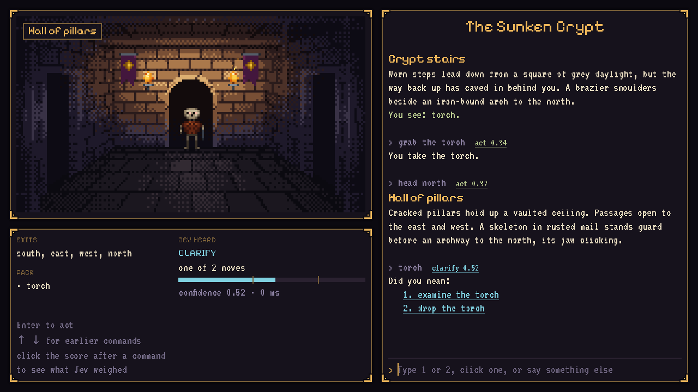

Three Jevs parse 16 lines of player slang.
The Sunken Crypt is a dungeon crawl whose parser sends whatever the player typed to a System One model, with the moves possible right now as the options of one Choice. I gave three Jevs, one hosted and two running on a laptop, the same 16 lines in the same game states, three times each. All three got the player to the crown without a wrong move. They differ in how sure they were, how often the game had to ask what the player meant, and how long a turn took on this setup. This is a gut check on a small, hand-written set of lines, not a benchmark: what it does and doesn't show.
The problem: a parser that understands, and can't invent
Classic parser games failed on vocabulary: "I don't know the word 'grab'." Games driven by a text-generating model fail the other way, inventing doors and items that don't exist. Here the author writes every room, item and line. Each turn, the moves possible right now become the options of one Choice, plus "none of these". The model can't pick a door that isn't there, because it isn't an option.

Fig. 1The game. Room art on the left, the transcript on the right, and under the art a panel that shows what Jev heard: the outcome, the move, and a confidence meter with ticks at the two thresholds.
"lay the smack down on Mr. Bones wit the blade"
Fig. 2One turn. Acting applies the move and prints its authored response. Clarifying prints "Did you mean:" with the two likeliest moves. Unknown prints one of three authored lines such as "Nothing here answers to that." If the model can't be reached, the game says the parser is offline and nothing happens.
Hypothesis, and what would confirm it
Hypothesis A Choice over the currently possible moves lets players type naturally with few dead ends, while the game stays fully authored, and it's fast enough to feel like a parser, not a chat.
| Check | Done when | TypeSafe | Flash 9B | 27B | Status |
|---|
Table 1Checks from the godot-jev README, with this run's numbers at the game's thresholds. Check 1 needs a corpus of at least 100 player inputs with typos, indirect requests and impossible ones. This run had 16 lines written to solve the dungeon, so its count of lines landed is not evidence for it yet.
The three decision models
Same API, same game states, same 16 lines. One model is hosted by TypeSafe; two are Open Jev models running 4-bit on an Apple M5 Pro laptop. The first run of these lines, on 2026-09-30, had two of the three. Flash 9B is new since then.
What Jev was asked
Each request carries a small state, the player's words, and one Choice whose options are rebuilt every turn from the world's rules. The option text is the author's ("attack the skeleton with the shortsword"), and it is all the model has to match the player's words against. Step through the 16 lines to see the question change as the player moves and picks things up.
How an answer becomes a turn
Jev returns a probability for every option and a confidence in the one it chose. The parser doesn't just take the choice. At 0.75 or more it acts. From 0.40 it asks "Did you mean:" and offers the two likeliest moves. Below that, or when the choice is "none of these", the game says the request isn't possible. A wrong move changes the game's state; a question costs the player one keypress.
Fig. 4Pick an example, or any line, model and round. The bar shows the three likeliest options as the run recorded them; the pale remainder is every other option together. The outcome at each setting comes from the game's own parser, replayed over the recorded answer; no new requests are made. The ask threshold can't be above the act threshold, so moving one past the other carries it along.
Result: nobody made a wrong move
At the game's thresholds of 0.75 and 0.40, with differences shown against TypeSafe Jev.
Where the three models differ
Same top choice on every turn, different confidence in it. That difference is what the player would notice: a model that is less sure makes the game ask more often.
7aHow sure each model was
7bEvery line, side by side
Fig. 6Each bar is one model's first-round answer: its three likeliest options, shaded by what they are. The mark gives the turn at the game's thresholds: ✓ acted on the move the line means, or came back unknown for the line that means nothing; ? asked, with the move among the two offered; ▼ a dead end; ✗ a wrong move. Hover or tap a bar for the options and all three rounds.
Move the thresholds
The thresholds are two numbers in the parser, applied to answers already returned, so they can be tried after the fact. Raise the act threshold and a less sure model asks about more lines. Raise the ask threshold and its questions turn into dead ends.
Fig. 7Panels: one row per round, one cell per line in route order, shaded by what the game did at these thresholds. Charts: how many of each model's 48 turns ask, or dead-end, as one threshold moves and the other stays where its slider is; the vertical rule follows the slider. A dead end is a line that means a move and comes back unknown.
Speed: one model per lane
Check 2 asks for p95 ≤ 500 ms per turn, from the player's Enter to the game's response. Measured in the game loop around each parse, one request at a time, after one untimed warm-up per model.
They are not a statement of how fast these models are. The two Open Jev figures are what one laptop measured: 4-bit MLX builds on an Apple M5 Pro running macOS, a desktop operating system and not a server. Both local models were loaded at the same time, and an editor, a browser and other applications were running. The same weights on server hardware, at another quantisation or under another runtime would time differently.
The TypeSafe figure is a round trip over the network from that laptop to a hosted API, so it mixes their serving time with my connection. Read all three as what a turn cost in this setup, on this day.
9aTime per turn along the route
| Decision model | Run | p50 | p95 | max | Check 2 |
|---|
What this does and doesn't show
This was a gut check. Read it as "the mechanism works on three models, on lines written to solve the dungeon", not as a measured accuracy.
- The same game, parser and thresholds work unchanged on all three decision models.
- A Choice over the possible moves mapped these 16 lines of heavy slang to the right authored move.
- When a model is less sure, the thresholds turn that into a question, not a wrong move.
- The thresholds can be tried after the fact without asking again.
- 16 lines, in one voice. They were written to solve the dungeon in order for a recording, not sampled from what players type. One line is 6 percentage points.
- Three rounds are not three samples. The two local models gave the same answer to a line every round, so Flash 9B's 6 questions are 2 lines asked 3 times.
- One impossible request. Check 1 needs many: wrong-room requests, items that aren't there, small talk. Flash 9B put only 0.60 on "none of these" for the one it got.
- No typos, no indirect requests, and nothing ambiguous between two moves in the same room.
- Short option lists. Between 6 and 13 options a turn, against the 255 a Choice can take.
- The lines don't separate the models. All three landed 48 of 48, so this says nothing about which understands best.
- How fast the models are. See the note under Speed.
- Write the check-1 corpus: at least 100 inputs with their game state and expected move, covering paraphrases, typos, wrong-room requests and "none" cases, and a headless script that plays it against each model.
- D&D mechanics that stay authored: hit points, and d20 checks whose outcomes are all written.
- Creatures that react through Noul and Score questions about what they see, alongside the parser.
- A small key-holding proxy, so an exported build ships without a key (check 4).
Run details and reproducing it
| Date | 2026-10-08, 20:42 UTC |
|---|---|
| TypeSafe Jev | jev-1.13.0, pinned, hosted API |
| Open Jev 27B | openjev/openjev-MLX-4bit (MLX, 4-bit, 14 GB), T=0.85 |
| Open Jev Flash 9B | openjev/OpenJev-Flash-9B-MLX-4bit (MLX, 4-bit, 5 GB), T=1.07 |
| Open Jev helper | shim.py 81a22f1b for both, with each model card's calibration settings |
| Hardware | Apple M5 Pro, 64 GB, macOS 27.2. Both local models loaded at once (ports 3002 and 3003), other applications running. |
| Lines | tools/session.gd: 16, of which one asks for something the author never wrote |
| Requests | 3 rounds. Each line goes to each model in turn, in the same game state, before the route moves on. First answer only, no retries. One untimed warm-up per model. |
| Thresholds | Act at 0.75, clarify at 0.40, as in the game |
| Timing | Godot 4.7.2, headless, around each parse. The loop ticks about every 7 ms, so times fall on steps of that size. |
cd godot-jev
export TYPESAFE_API_KEY=sk-... TYPESAFE_DEFAULT_MODEL=jev-1.13.0
# Open Jev 27B on :3002 and Flash 9B on :3003
godot --headless --path . --import
godot --headless --path . \
--script res://eval/compare_backends.gd -- \
--rounds 3 --openjev flash9b=http://127.0.0.1:3003
Every number on this page is generated from the recorded run by
docs/tools/build-godot-jev-data.gd, which replays each answer through the game's own
parser and refuses to write if an outcome or a summary differs from what the run saved. Source:
. The written report is
results-2026-10-08.md.